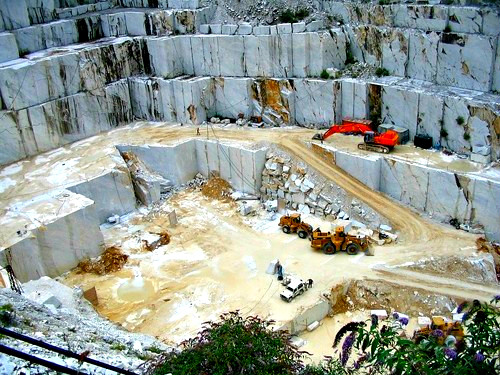

Somos Aparicio Mármol, empresa peruana productora y comercializadora de travertinos, calizas y mármoles. Comercializamos nuestros productos en todo el Peru, manteniendo los más altos estándares de calidad y servicio. Todas las piedras mostradas en las siguientes secciones provienen de nuestras canteras que se ubican a más de 3500m.s.n.m. en los andes del Perú. Estas piedras han sido seleccionadas a lo largo de generaciones por sus atributos arquitectónicos, excelentes propiedades físicas y la gran extensión de sus reservas.

Raices de la Cantera Huancaina
En la industria peruana de las piedras naturales se remonta a 1870, fecha en la que la familia Aparicio pone en operación su primer taller de mármoles en el centro de Lima, la familia decidió denominar la empresa como MARMOLERIA S.A. en referencia al nombre de la calle en Lima donde operó el Primer taller de escultura de mármol de la familia Aparicio. Mármol es el resultado de más de 40 años en la industria de la piedra.
Responsabilidad Social
El marmol explota canteras de un producto natural es decir trabaja en un ambiente libre de contaminantes. Nuestra responsabilidad abarca la minimización del impacto sobre el medio ambiente de los ecosistemas de la comunidad, e incluso la restauración de la tierra a su entorno natural después de terminada la explotación. Además trabajamos en conjunto con las comunidades para ayudarlas a desarrollar proyectos como: construcción de canales de riego, escuelas, carreteras e infraestructuras diversas; además de capacitar y formar a las personas con habilidades de trabajo para mejorar nuestro servicio.